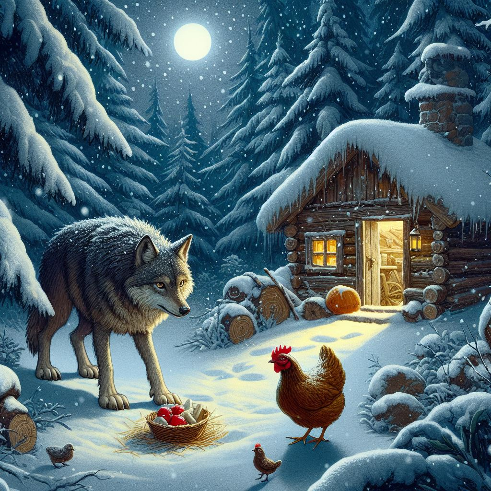
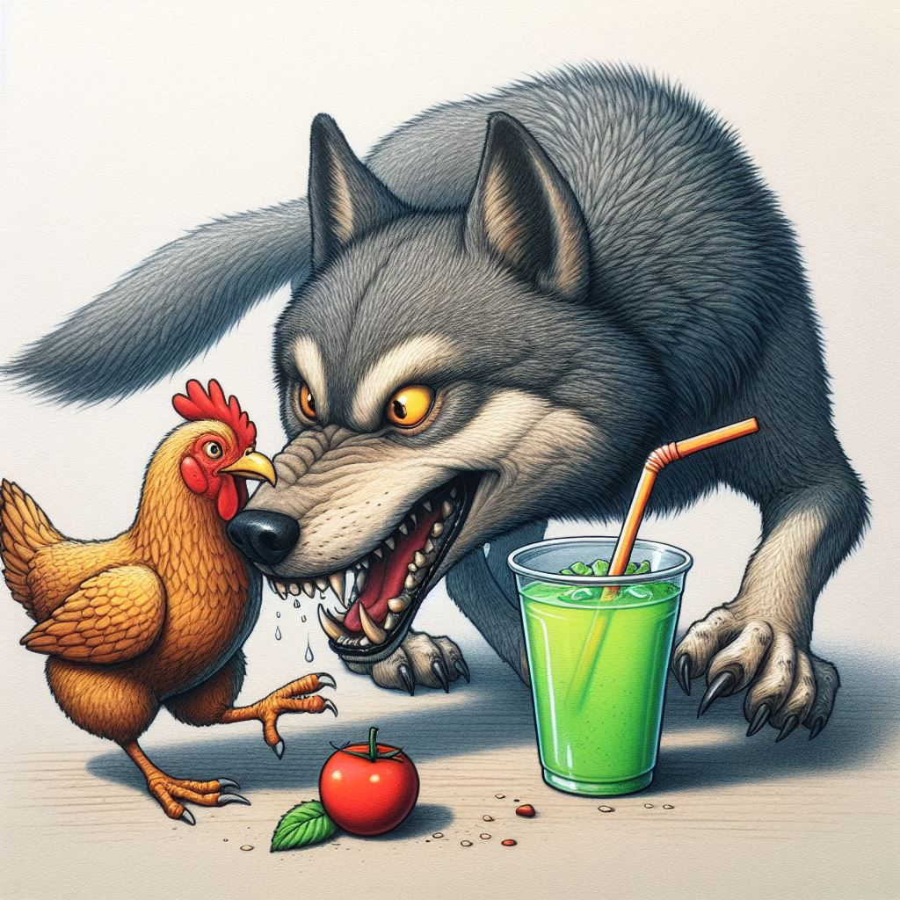
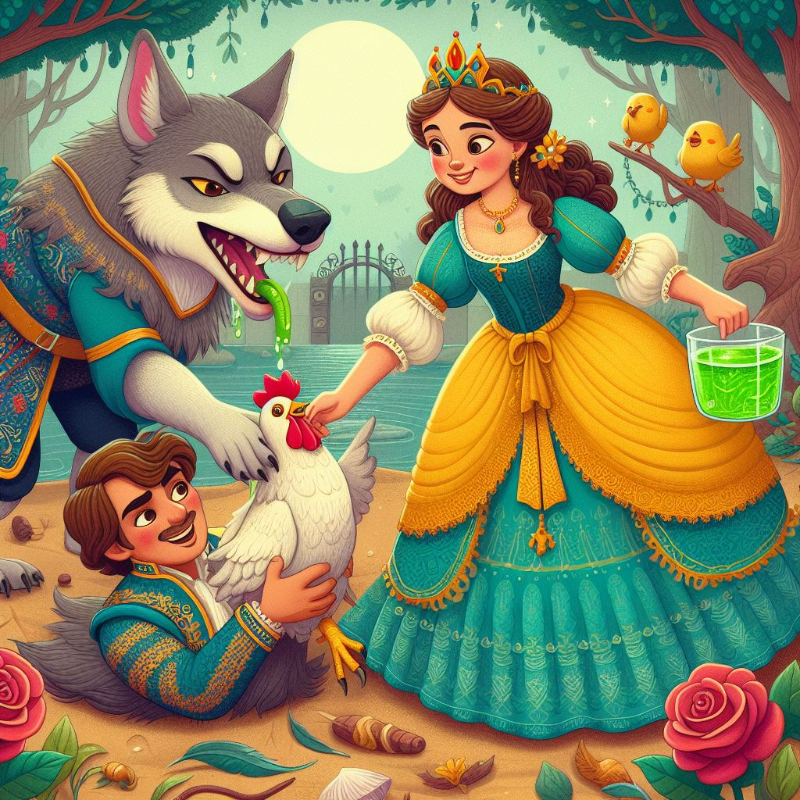
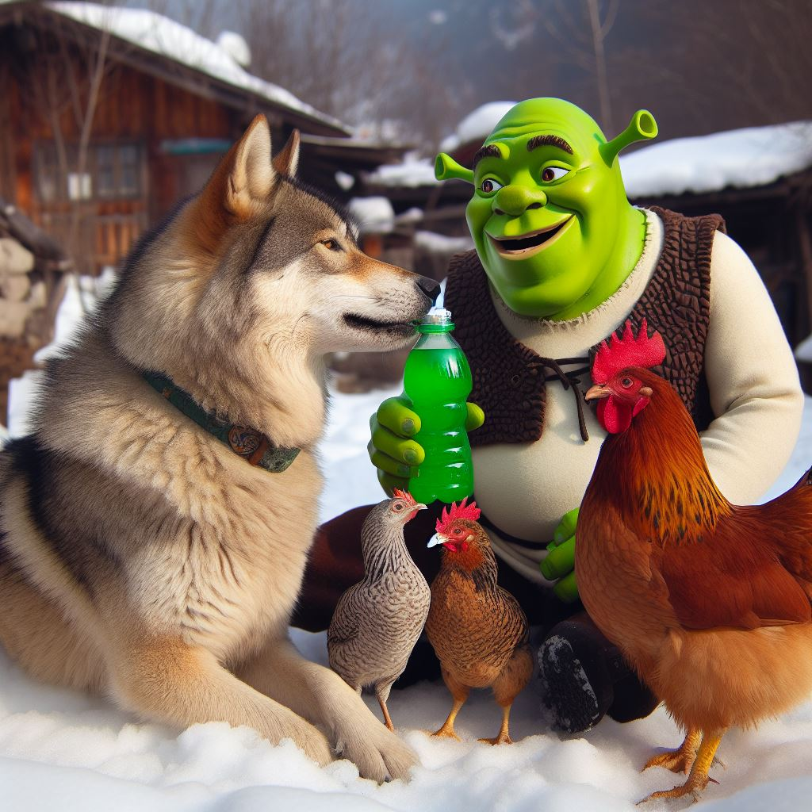

Sniegu padengtame miške, gilią žiemos naktį, gyveno vilkas vardu Nojus. Jis troško skanaus Prime gėrimo, kurį rado apleistoje troboje. Tačiau gėrimą saugojo višta vardu Janina, žinoma iš savo drąsos ir gudrumo.

Nojus, vedamas godumo, nusprendė pagauti Janiną ir atimti iš jos brangųjį Prime. Pasinaudojęs tamsos priedanga, jis sėlino prie vištidės, pasiruošęs pulti. Staiga Janina, netikėtai užklupta, parodė neįtikėtiną drąsą. Ji puolė vilką, spardydamasi ir sparnais mosuodama, kol pavyko iš jo pagrobti Prime gėrimą.
Nojus, įniršęs dėl tokios įžūlumo, puolė Janiną ir prarijo ją visą. Tačiau višta nepasidavė. Ji kudakavo ir spardėsi vilko pilve, sukeldamas jam nepakeliamą skausmą.

Netrukus pro šalį ėjo princesė, žinoma dėl savo gerumo ir rūpesčio gyvūnais. Išgirdusi keistą triukšmą iš vilko pilvo, ji suprato, kad viduje yra pagrobtoji Janina. Nedvejodama princesė atvėrė vilko nasrus ir ištraukė vištą.
Janina, nors ir pavargus, bet gyva, dėkojo princesei už išgelbėjimą. O princesė, žvelgiant į Prime gėrimą, negalėjo atsispirti pagundai. Ji gurkštelėjo žalio skysčio ir staiga, burtų galia, ji pavirto žaliuoju ogriu - Šreku.

Nuo tada Šrekas, Janina ir Nojus tapo neįprastais draugais. Jie kartu nuotykiavo po snieguotą mišką, dalydamiesi Prime gėrimu ir rūpindamiesi vieni kitais, įrodydami, kad net ir žiemą draugystė ir drąsa gali nugalėti tamsą ir godumą.